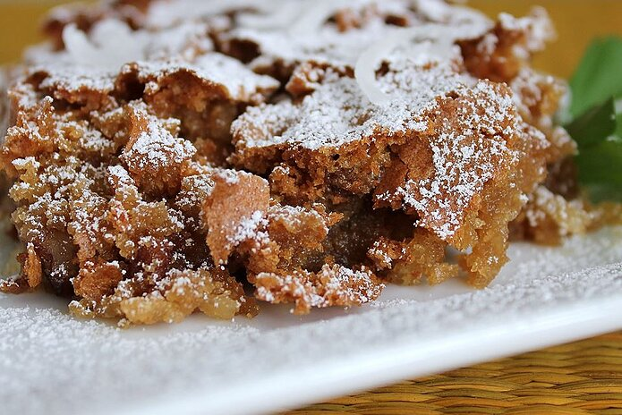

Sad Cake

Sad Cake Recipe
This cake is called sad cake because the cake looks sad. It actually "falls" during baking and is a flat cake. It may be sad looking, but it is moist, chewy and sweet. It does not need a frosting.
Ingredients
- 2 cups biscuit baking mix
- 2¼ cups packed brown sugar
- 4 eggs
- ½ cup vegetable oil
- 1 cup flaked coconut
- 1 cup chopped pecans
- 1 teaspoon vanilla extract
Instructions
-
Preheat oven to 350 degrees F (175 degrees C). Grease and flour one 9x13 inch pan.
-
Mix thoroughly together the biscuit mix, brown sugar, eggs, flaked coconut, chopped pecans, and vanilla. Pour batter into prepared pan.
-
Bake at 350 degrees F (175 degrees C) for 35 to 40 minutes. Allow cake to cool before cutting.
Home -
Sugar Cookies -
Brownies